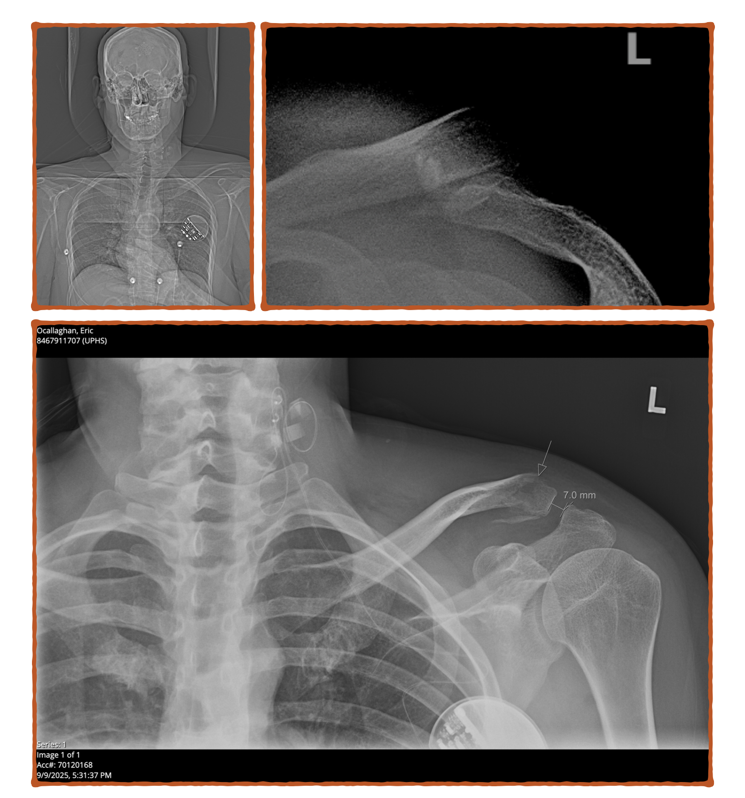
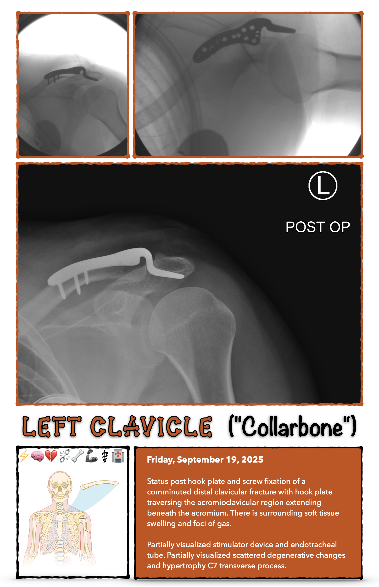

Before Broken
Minimally displaced, oblique, comminuted fracture of the distal left clavicle with top normal (7 mm) acromioclavicular distance, suggesting articular involvement of the left acromioclavicular joint.
Partially visualized left chest Vagus nerve stimulator, with wires along the left neck. No radiographic evidence of discontinuity.
Before (Broken) X-Rays
After Surgery
Status post hook plate and screw fixation of a comminuted distal clavicular fracture with hook plate traversing the acromioclavicular region extending beneath the acromium. There is surrounding soft tissue swelling and foci of gas.
Partially visualized stimulator device and endotracheal tube. Partially visualized scattered degenerative changes and hypertrophy C7 transverse process.
After (Surgery) X-Rays
"Hook plate" refers to the (permanent) metal medical device shown on the "after" X-Rays above, more specifically this "DePuy Synthes Variable Angle LCP™ Clavicle Hook Plate System (2.7 mm)" from Johnson&Johnson MedTech: https://www.jnjmedtech.com/en-US/product/va-lcp-clavicle-hook-plate
Additionally, my "Vagus nerve stimulator" was implanted in 2006, turned off in 2007, and the battery has been dead for years: https://en.wikipedia.org/wiki/Vagus_nerve_stimulation